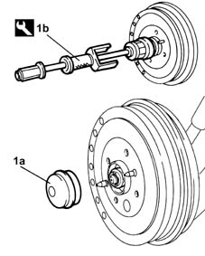
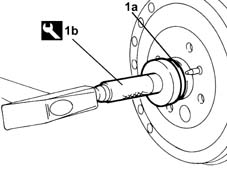

4450D70 hub cap of one rear wheel, l/h or r/h - r+r
- Path
- Procedures > 44 SUSPENSION AND WHEELS > 4450 WHEELS AND HUBS > 4450D rear wheel hubs > 4450D70 hub cap of one rear wheel, l/h or r/h - r+r
- Kind
- repair procedure (removal / refitting; the operation number is the code)
- Applies to
- all engines; all production periods
- Interactive page
- https://sloeber94.github.io/elrnDB-lYpsln/en/#/2429275
Applies to: all engines; all production periods
 Removing
Removing
 Refitting
RefittingPosition the vehicle on the ramp.
FOR THE RIGHT REAR STUB AXLE
Proceed with removal 4450B08 right rear wheel r r .
FOR THE LEFT REAR STUB AXLE
Proceed with removal 4450B06 left rear wheel r r .
1. Remove the rear wheel hub cap (1a) using the tool (1b).
 | Name | Country |
|---|---|---|
1b | Extractor | 1.847.014.000 |

Applies to: all engines; all production periods
Refitting
Removing1. Place the rear wheel hub cap (1a) back in its housing using the tool (1b).
| Name | Country |
|---|---|---|
1b | Drift | 1.875.059.000 |

Applies to: all engines; all production periods
FOR THE LEFT REAR STUB AXLE
Proceed with refitting 4450B06 left rear wheel r r .
FOR THE RIGHT REAR STUB AXLE
Proceed with refitting 4450B08 right rear wheel r r .
Remove the car from the ramps.